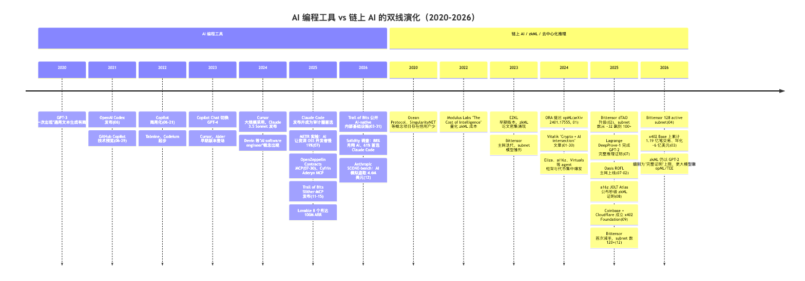
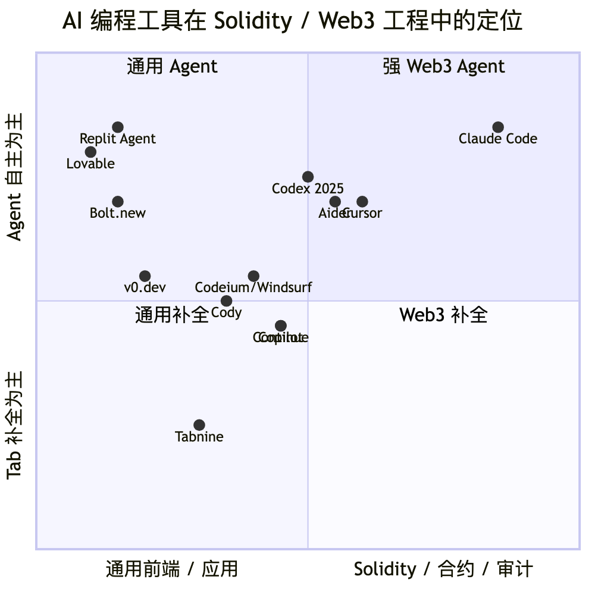
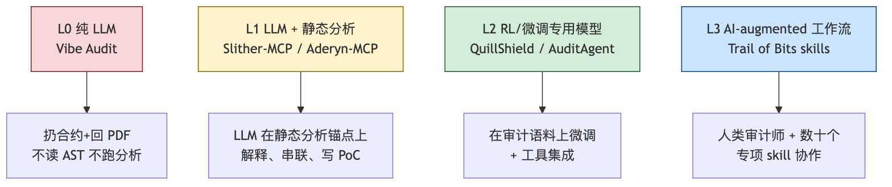
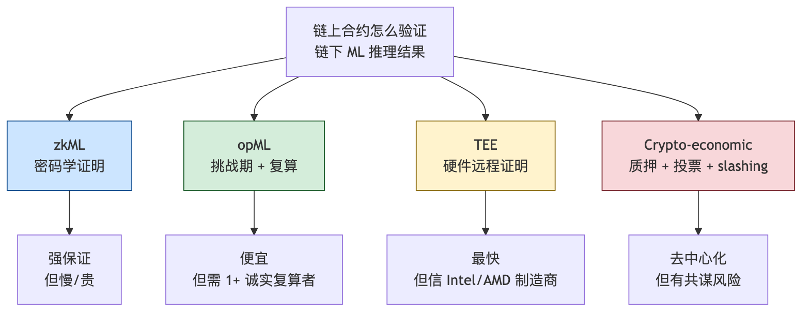
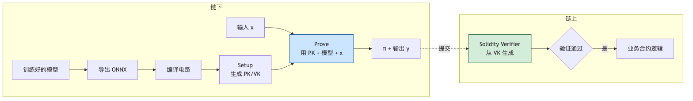
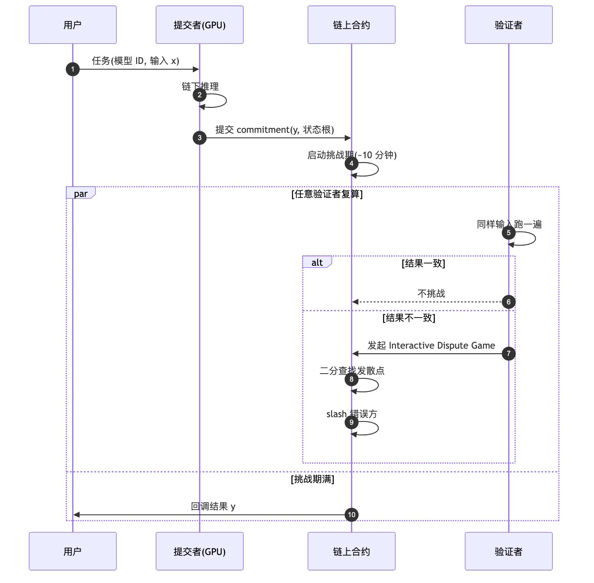
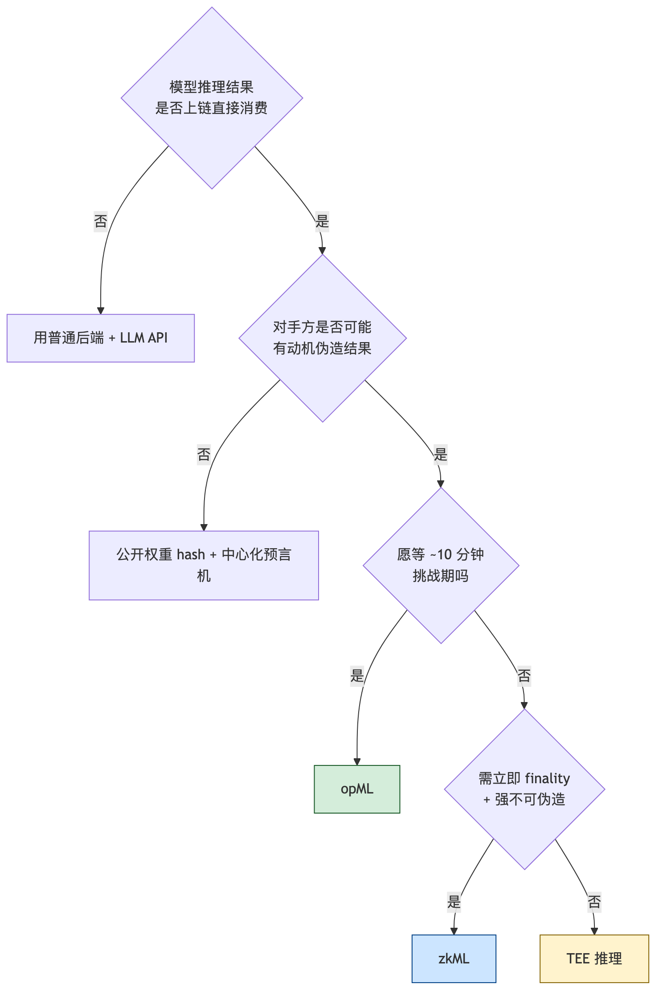
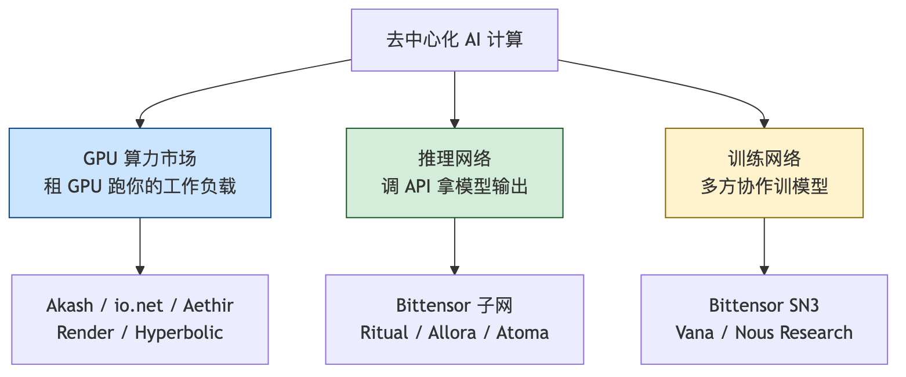
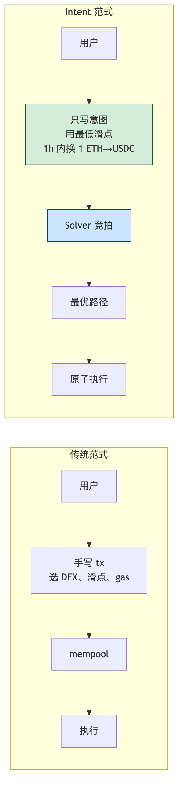

本模块回答三个问题：2026 年的 AI 工具能帮工程师做哪些 Web3 工作、哪些不能；"链上 AI"（zkML、opML、去中心化推理、链上 agent）哪些已经跑起来、哪些还在 demo；工程师应如何升级工作流、警惕哪些被高估的方向。
所有性能、行情、资本动作均附 URL；区分"已生产化 / 刚刚涌现 / 仍是 hype"三档。
前置：模块 11（基础设施与工具）——RPC、索引、存储、DePIN compute 是本模块"链下推理 + 链上验证"的运行底座。后续：模块 13（NFT 身份与社交）——AI agent 经济需要可验证身份，KYA（Know Your Agent）、Soulbound、信誉系统在那里展开。
整本模块用两把尺子衡量任何"AI × Web3"原语：
L0 是营销重灾区。L1 起才有工程价值，L3 是 2026-04 当前最先进实践。文中对每个原语标注其 L 等级与 Trust Model 列。

2024 是分水岭：Claude/GPT-4 让"AI 写 Solidity"从 demo 变工作流；主流安全公司体系化嵌入 AI 审计；AI agent + 代币 + intent 合流成为大资金叙事，但投机远多于真实使用。
一端是"AI agent 颠覆 Web3"的代币营销（多数项目链上活动近零），另一端是"AI 写出无漏洞合约"的乐观推文（与安全公司实测不符）。客观数据：
本模块目标：用 Trust Model + L0-L3 框架画清"能用、应用、不应过度依赖"的边界。
Trust Model（本节）：信任 AI 输出 = 信任"人类工程师在每个 diff / PR 上做了 review"——AI 的 trust 全部来自人类把关者，与下面 §3 的"链上 trust"是两回事。本节工具被纳入"生产化"的标准是：主流团队默认装入工作流、有公开 ROI 数据。
对应 METR "time-horizon" 度量（2025-03 论文）：当前模型在人类 4 分钟以内的任务上接近 100% 成功，超过 4 小时跌到 <10%。模式 A→D 自主程度递增，对应越长 time-horizon，人类 review 强度必须同步增加。
forge test、看输出再改。Solidity Developer Survey 2025（1,095 位开发者、87 国，2025-12 调研、2026-04 检索）：
CLAUDE.md 作项目级 prompt。
| 任务类型 | AI 工具的真实加速比 | 推荐工具 |
|---|---|---|
| 写第一版 ERC-20 / 721 / 4626 骨架 | 5-10×（节约模板拷贝时间） | OZ Contracts MCP + Claude Code |
| 补充 NatSpec、写 README、画 mermaid | 3-5× | Claude Code 或 Cursor Chat |
| 在不熟悉的代码库上做小 bug fix | 1-2× | Cursor + Slither MCP |
| 在非常熟悉的代码库上做小 bug fix | 可能 -20%（METR 数据） | 不必用 AI |
| 写 Foundry 测试 + invariant 草稿 | 3-5×（草稿） | Claude Code |
| 设计新协议、新经济机制、新密码学 | 0-1×（AI 是讨论伙伴） | LLM 当读论文助理而非设计者 |
| 前端 dApp UI 原型 | 5-10× | v0.dev / Bolt.new + wagmi |
| Subgraph schema 草稿 | 3-5× | Claude / Cursor |
低风险高重复任务，AI 加速明显：Foundry/Hardhat 输出 → Markdown；git diff → 变更摘要；校对、术语统一、多语言。
草稿让 AI 写、结论自己下。常见失误：把 AI 总结当 finding 提交 Code4rena/Sherlock，被判 invalid 后算入个人 false positive 比例。
AI 最稳的方向（"读"而非"写"）：
工程师工作流：可疑交易 raw input + decoded calls 喂 Claude/Cursor，要求"正常路径 vs 异常路径"对比。
概念解释可信，数学推导不可信。具体常数（约束数、proof size）必须回论文核对。
schema.graphql 草稿；mapping 函数（事件 → entity）的字段更新顺序与 tx-level 去重逻辑必须人审。
OpenZeppelin 2025-07-30 发布（检索 2026-04）。关键设计：MCP 替换 AI 输出——返回经 OZ 规则验证的可生产代码。支持 Solidity（ERC-20/721/1155/Stablecoin/RWA/Governor/Account）、Cairo、Stellar；适配 Cursor/Claude/Gemini/Windsurf/VS Code。
MCP（Model Context Protocol，Anthropic 2024-11，文档）在 Web3 生态 2025-2026 快速扩展。把 LLM 的不确定性输出绑定到确定性工具调用——Anthropic Constitutional AI / tool use 工程文档定义了 tool 输出在 trust 链上的位置：tool 调用结果属于"非 principal" 输入，必须二次校验，不允许直接驱动决策。这是本模块 §1.6 / §2.1.2 / §3.x 通用基础。
| MCP 服务器 | 直觉 | 来源 |
|---|---|---|
| OpenZeppelin Contracts MCP | 用 OZ 规则替换 LLM 输出（见 §1.6） | openzeppelin.com |
| Aderyn MCP | Cyfrin Rust 静态分析器 → LLM | Cyfrin docs |
| Slither MCP | Trail of Bits Slither → LLM（2025-11-15） | trailofbits/slither-mcp |
| Foundry MCP server | LLM 直接跑 forge / cast / anvil | PraneshASP/foundry-mcp-server |
| Microsoft Foundry MCP | Azure 云托管 MCP，Ignite 2025 公测 | Visual Studio Magazine |
| MCP 服务器 | 直觉 | 来源 |
|---|---|---|
| QuickNode Solana MCP | 让 Claude 检查钱包余额、token 账户、tx 详情 | QuickNode 教程 |
| solana-web3js-mcp-server | Solana web3.js 全套开发 + 智能合约部署 | FrankGenGo/solana-web3js-mcp-server |
工程师基础四件套：OpenZeppelin Contracts MCP（生成）+ Aderyn MCP（静态分析）+ Slither MCP（静态分析）+ Foundry MCP（执行测试）——覆盖"AI 写 Solidity"的 80% 工作流。
Trust Model（本节）：AI 输出的 trust 取决于"是否用确定性工具锚定 + 是否有人类二次审"。把 §0 的 L0-L3 投射到审计场景：

claude mcp add --transport stdio slither -- uvx --from git+https://github.com/trailofbits/slither-mcp slither-mcpOlympix 博客 State of Web3 Security 2025（检索 2026-04）统计大多数 2025 年大型黑客合约都已审计过（Euler $197M、BonqDAO $120M 等），佐证 AI 审计价值在于"审完后再过一遍"。
OZ 是最有动力做"AI 审计"赚钱的玩家之一，他们都没出——当前 AI 撑不起这个产品形态。
工程师选型：闭源旗舰（Claude Opus/Sonnet 4.x、GPT-5）综合质量领先；开源（DeepSeek R1、Llama-3.x、Qwen-2.5）合规/自托管场景值得用，但召回率低 10-25%。所有研究一致结论：必须人审。
Zellic V12（检索 2026-04）——独立参赛、独立评判：6 场比赛 submit 25 个漏洞（2 H、2 M、4 L、9 info，其余 invalid/重复）。排除 Code4rena（利益冲突 + 训练数据污染）。
AI 能在竞赛捞到 high，但人类 top-5 watson 同场通常找 5-10 个 high。当前 AI 是 entry-level 选手。
| 维度 | 数据点 | 来源 |
|---|---|---|
| Zellic V12 在公开竞赛 | 6 场（Cantina/Sherlock/HackenProof）共 submit 25 finding：2 H、2 M、4 L、9 info、其余 invalid/重复。Valid 率约 17/25 ≈ 68%，但折算到"H+M / total"只有 4/25 = 16% | Zellic V12 |
| Nethermind AuditAgent v2 | 内部 29 场审计样本上对真实 H/M finding 召回率 50%（v1 仅 15%） | Nethermind 博客 |
| 学术 LLMBugScanner | 在 SmartBugs 数据集上多 LLM 投票后比单 LLM 精确率高 10-15%，召回受训练分布限制 | Help Net Security |
| Anthropic SCONE-bench（攻击侧） | 405 个真实被黑合约：51.11% 自动可攻；2,849 个未公开漏洞合约里发现 2 个 zero-day；单 agent 平均成本 1.22 美元 | Anthropic Red Team |
| 人类 Top Watson 对照 | Sherlock 顶级 watson 2025 全年在榜单 top-2，单年收入约 44.2 万美元，远超任何 AI 工具的"竞赛获奖额" | 0xSimao - Contest Academy |
| Code4rena/Sherlock 平台 | Code4rena 公开 leaderboard 显示，每场比赛通常有 50-200 watson 参赛、报告 100-500 个 finding；AI 工具如果只能 submit 4-5 个 H+M，相当于挤进 top 10-30，离 top-3 仍差一个数量级 | Code4rena Leaderboard |
漏报率：综合 Zellic V12 / Nethermind v2 / 学术工具，当前 AI 对 H+M recall 约 30-50%，卡在：(1) 训练数据污染使 benchmark 偏乐观；(2) 跨合约语义漏洞 LLM 不擅长。
误报率：无静态分析锚点时 70-90% finding 是 invalid；加 Slither/Aderyn 后降至 30-50% noise。进 final report 前人类必须复核每条 finding。
AI 审计 = "放大镜 + 实习生"。能让高级审计师覆盖更多合约，不能减少高级审计师数量。
Anthropic Red Team 2025-12 公布的 SCONE-bench（检索 2026-04）：
攻击侧 AI 比防御侧更便宜、更快。安全审计必须把 AI 加进流程。
Trail of Bits 2026-03（检索 2026-04）：
目前最体系化的"AI-augmented audit"案例。开源部分见 trailofbits/skills。
2025 年出现的"扔合约给 AI 打分"工具（统称 vibe audit）：不调任何静态分析，输出 "consider adding access control" 这种正确但与漏洞无关的建议，拉低客户预期。
不要为"只用 LLM 不调静态分析"的产品付费。
| 工具 | 类型 | 是否开源 | 关键数据 | 投入建议 |
|---|---|---|---|---|
| Slither + Slither-MCP | L1 | 开源 | Trail of Bits 内部默认配置 | 必装 |
| Aderyn + Aderyn-MCP | L1 | GPL-3.0 | 100+ detectors、VS Code Extension | 必装 |
| 4naly3er | L0/L1 | 开源 | Aderyn 的灵感来源、社区项目 | 装上备用 |
| Nethermind AuditAgent | L2 | 闭源 | 内部 29 场审计、50% 召回率 | 团队评估付费 |
| QuillShield (QuillAudits) | L2 | 闭源 | RL 微调、第三方数据少 | 观望 |
| Olympix | L1/L2 | 闭源 | IDE 内实时拦截 | 可选 |
| OpenZeppelin AI（Contracts MCP） | L1 | 部分开源 | 用于"生成"，不做"审计" | 配合 Claude Code 使用 |
| Vibe Audit 类 | L0 | 闭源 | 无 | 不推荐 |
| Trail of Bits skills | L3 | 部分开源 | 200+ skills、200 bug/周 | 学习其设计哲学 |
| Zellic V12 | L2 | 闭源 | 6 场竞赛、25 finding | 关注其方法论 |
| LLMBugScanner（学术） | L2 | 论文 | 多 agent 投票提升精确率 | 阅读 |
可工作不可裸跑：
流程：被黑 commit + 攻击 tx → LLM 生成 Foundry test → forge test 复现 → 证明 LLM 抓住关键路径。
"LLM 跑了 100 轮没找到反例" ≠ "协议安全"。
常见做法：Circom/Noir/Halo2 报错丢 Claude 解释 constraint mismatch；电路代码 + 期望行为 → LLM 定位"哪一行约束少了"。
风险：约束少一行（unsound）与约束多一行（complete 但电路错）报错形态不同，LLM 容易混淆。LLM 给的"修好了"必须用 Picus 或 ZKSecurity 重新验证。
ZK 漏洞代价极高（unsound = 证明系统失效）——AI 推断最危险的地方，必须工具化验证。
名词最多、生产化最低的一层。本节把每个原语先归到它的 trust 锚——trust 没说清的方案不要接。
核心问题：链上合约怎么知道链下推理没作弊？四个可行答案，每个对应不同的 Trust Model：

| 原语 | 信任谁 | 信任什么 | 成熟度 |
|---|---|---|---|
| zkML | 椭圆曲线 / 哈希假设 | 给定权重 commitment，forward pass 算术正确 | L1-L2（小模型生产、GPT-2 级实验） |
| opML | "至少 1 个诚实复算者 + 经济激励" | 在 ~10 分钟挑战期内有节点会复算并发起争议 | L2（13B 参数 demo 上线） |
| TEE | 硬件厂商（Intel/AMD/NVIDIA）+ 远程 attestation 流程 | enclave 里代码与数据未被外部读取 / 篡改 | L2-L3（Phala / Oasis 主网） |
| Crypto-economic（Bittensor） | 加权 stake 投票 + slashing | 多数 stake 不会共谋造假 | L1-L2（subnet 收入真，但有共谋风险） |
先问"我能否用集中式预言机 + 公开权重 + hash"——够用就别拉 zkML/opML 进来。
Trust Model：信任椭圆曲线/哈希假设 + 权重 commitment 的发布渠道。链上合约不知道权重 W，也不知道输入 x，但能信任 y = f(W, x) 的算术过程。zkML 不证明：W 是"对齐过 / 诚实训练"的模型；y 是"正确答案"或"无偏见"；W 没被替换为后门权重。trust 从"信链下推理"换成"信权重 commitment + 模型治理"——commitment 之外的 alignment / 数据集仍是 oracle 问题。
适用 L 等级：L1（小模型生产）到 L2（GPT-2 级实验）。

zkML 把推理结果编码成 zk-SNARK/STARK 证明，链上合约只验证证明、不重新跑模型。链上不知道模型权重 + 不知道输入 x，但能信任输出 y 来自合法计算。
| 框架 | 团队 | 当前能力 | 数据来源 |
|---|---|---|---|
| EZKL (zkonduit) | zkonduit | 平均比 RISC Zero 快 65.88×、比 Orion 快 2.92×；内存占用比 Orion 少 63.95%、比 RISC Zero 少 98.13%；XGBoost 例子 1 年快 15× | EZKL Benchmarks、State of EZKL 2025 |
| JOLT Atlas | a16z crypto | 基于 lookup + sumcheck，2025 秋部分模型秒级证明、无 GPU；论文称对 ML 比 zkVM 快 3-7× | Jolt Atlas paper、Kinic |
| Lagrange DeepProve-1 | Lagrange Labs | 2025-07 完成 GPT-2 完整推理证明；宣称比 EZKL 快 54-158×；MLP 验证 671×、CNN 验证 521× | DeepProve-1 公告、DeepProve repo |
| RISC Zero (zkVM) | RISC Zero Inc. | 通用 zkVM，灵活；但 ML 路径偏慢，2025 年仍是"什么都能证、但慢" | 同上 EZKL 对比项 |
| zkPyTorch (ICME) | 学术 + ICME | 2025-03 demo VGG-16 证明 2.2s | ICME zkML 2025 综述 |
| Modulus Labs | Modulus Labs | 2022 发布 "The Cost of Intelligence" 第一篇 zkML 系统 benchmark；曾跑通 18M 参数模型链上推理 | Modulus Labs Blog、The Block 募资公告 |
| Giza (LuminAIR) | Giza | 2025-09 发布 LuminAIR，基于 Circle STARK；与 Yearn Finance 等 DeFi 收益聚合器集成 | Giza GitHub |
| ORA zkML | ORA | 与 opML 是同一团队的双产品线，zkML 用于"高价值低频"场景 | ORA Docs |
| Aztec ML / Noir 上的 zkML | Aztec | 在 Noir 电路 DSL 上写 ML，目标是隐私 DeFi + ML 组合 | Aztec docs |
所有数据均检索 2026-04，来源以官方 benchmark 与第三方独立 benchmark 为准。
| 模型规模 | 代表模型 | EZKL | RISC Zero zkVM | Modulus Labs | Lagrange DeepProve | JOLT Atlas |
|---|---|---|---|---|---|---|
| 线性回归 | logistic regression | ~1ms 证明（EZKL bench） | ~10ms | 已支持 | — | — |
| 树模型 | XGBoost (~1k 节点) | 秒级；2024 年内快 15× | 数十秒 | 已支持 | — | — |
| 小 CNN | MNIST 分类（数十万参数） | 几秒-几十秒 | 分钟级 | 已支持 | MLP 验证 671×、CNN 验证 521× 加速 | 部分模型秒级 |
| 中 CNN | VGG-16（~138M 参数） | 分钟级（含 setup） | 分钟到小时级 | — | — | — |
| 中 CNN（zkPyTorch） | VGG-16 | — | — | — | — | zkPyTorch 2025-03 跑出 2.2s（ICME 综述） |
| 大模型上限 | Modulus Labs 18M 参数模型 | — | — | 18M 参数链上推理 benchmark | — | — |
| GPT-2 级 LLM | GPT-2 (~124M 参数) | 不支持完整推理 | 不支持完整推理 | 不支持完整推理 | 2025-07 完成完整推理证明（DeepProve-1） | 部分层支持 |
| Llama-2-7B+ | 7B-70B 参数 LLM | 不支持 | 不支持 | 不支持 | 仅部分层 demo | 仅部分层 demo |
三组口诀数据：
"可验证推理"营销的三个反问：当 zkML 项目宣传"我们能证明 GPT-4"，先问：(1) 是完整模型还是某层？(2) 什么硬件？(3) 单次 proof 多少时间 + RAM？多数营销贴答不出。DeepProve-1 完成 GPT-2 推理证明只证明算术正确，不证明 GPT-2 输出"有用"——回到本节开头 Trust Model。
Trust Model：信任"在挑战期（~10 分钟）内至少有 1 个节点会复算并发起争议"。任何错误结果只要有 1 个诚实复算者就能被 slash。opML 不保证：实时 finality（必须等挑战期）、模型权重隐私（权重通常公开或 hash 公开）、抗 100% 多数共谋（假设至少 1 个诚实节点）。
适用 L 等级：L2（ORA 13B demo 已跑通），适合"高频小额、容忍 10 分钟延迟"的链上 AI 调用。

ORA opML 论文（arXiv 2401.17555）（检索 2026-04）：OP Rollup 7 天源于复算所有 L2 交易的时间冗余；opML 复算单元是"一次推理"，独立、并行性强，实际挑战期压到 10 分钟级别（ORA 文档，检索 2026-04）。
ORA Mirror 文（检索 2026-04）展示了 13B 参数模型跑在 opML 上的 demo——2026-04 时唯一公开运行 13B+ 模型的去信任推理方案。

Trust Model：信任 Intel/AMD/NVIDIA 的硬件设计 + 厂商签发的 remote attestation 证书 + enclave 固件没有侧信道漏洞。TEE 不保证：抗硬件厂商（Intel 历史上有 SGAxe/Plundervolt）；抗物理拆解攻击；100% 抗侧信道。trust 是"密码学 + 硬件经济"——攻破 enclave 的成本通常远高于受保护资产。
适用 L 等级：L2-L3（Phala 日处理 13.4 亿 token、Oasis ROFL 主网）。适合"保护用户数据 + 不愿付 zk 成本"，是大模型推理的现实选项。
TEE（Intel TDX/SGX、AMD SEV-SNP、NVIDIA H100 confidential computing）：硬件保证 enclave 内代码 + 数据不被外部读取/篡改，厂商签发 remote attestation。
| 项目 | 类型 | 数据点 |
|---|---|---|
| Phala Network | TEE 云 + Confidential AI | 2025 重定位为"Confidential AI 平台"。年底 Phala Cloud 10,000+ 用户、近 400 付费客户、日处理 1.34B LLM token（Phala 2025 总结） |
| Oasis ROFL | Verifiable off-chain compute | 2025-07-02 ROFL 主网上线（Oasis 公告），Talos 自治财库、Zeph 隐私 AI 是公开案例 |
| iExec | TEE + 数据市场 | 与医疗机构合作过 PoC，用 Intel TDX 在 enclave 内分析患者数据（Messari TEE 报告） |
| Marlin | TEE 中继 + GPU enclave | 主打"低延迟 TEE 推理"，与 EigenLayer 集成做共享安全 |
| Ten Protocol | TEE-based L2 | 整链跑在 enclave 内，状态对外加密；目标是"私有合约 + 私有 AI" |
| Atoma Network | Sui 上的 TEE 推理网络 | live on Sui mainnet，TEE + 隐私推理（Gate Learn 2025 综述） |
Trust Model：因子类而异—— - GPU 市场（Akash/io.net/Aethir）：信任"我自己跑的容器，结果我自己验"——计算正确性责任在租用方，链只做支付与撮合。 - 推理网络（Bittensor/Ritual/Allora/Atoma）：信任 stake 加权投票（Yuma 共识）+ slashing。共谋风险随 stake 集中度上升。 - 训练网络（Bittensor SN3 / Vana / Nous）：信任分布式训练协议 + 验证 + 复现实验。
适用 L 等级：GPU 市场 L2-L3（真实付费客户），推理/训练网络 L1-L2（subnet 级别有真实收入，但跨 subnet 的"trust 普适性"未验证）。

99% 的 dApp 用 OpenAI/Anthropic/本地模型就够了。如果你不卖 GPU，多数项目可以观望。
工程师视角看 GPU 市场，最重要是单价。把头部去中心化 GPU 与中心化云对比（数据均检索 2026-04）：
| 项目 | H100 单价/小时 | A100 80GB 单价/小时 | 业务规模 |
|---|---|---|---|
| Akash | $1.49（Akash GPU 价格页） | $0.79 | 2025-Q1 季度 lease 收入破 100 万美元，年化 ARR ~420 万美元（Messari） |
| Hyperbolic | $3.20 SXM（Hyperbolic Docs Pricing） | $1.60 | 融资 1,200 万美元；Proof of Sampling 验证；Llama-3.x / Qwen-2.5 系列开放调用 |
| io.net | 浮动（spot 模式） | 浮动 | 链上累计可验证收入 >2,000 万美元，300K+ GPU 跨 55+ 国，比 AWS/GCP 便宜 70% |
| Aethir | 企业询价为主 | — | 2025 年总收入 1.278 亿美元，Q3 ARR ~1.66 亿美元，1.5B+ 计算小时，435K+ GPU 容器跨 93 国 |
| Render | 不直接卖 H100/A100 | — | Solana 上的 GPU 渲染网络，主打 3D 渲染 + 部分 AI 推理 |
| AWS / GCP（对照） | $4-6（按需） | $2-4 | 中心化云的"参考价"——大多数去中心化 GPU 卖点是"比这便宜 30-70%" |
| 市场平均 | $2.98 跨 42 个云提供商（getdeploying H100 比价） | — | 最低 spot 已经压到 $0.47/h |
这一层本质是 DePIN + AI，商业模式比 agent 代币健康，但跟"链上 dApp 用户体验"几乎无关——除非你在卖 GPU。
这一层 2024-2025 集中爆发，绝大多数仍在"测试网 + 小规模真实用户"阶段，不是"明天就能接的 SaaS"。
| 项目 | 直觉 | 关键数据（2026-04） |
|---|---|---|
| Vana | "用户拥有的数据用来训 AI" | 100 万+ 用户、20+ live data DAO、与 Flower Labs 合作 COLLECTIVE-1（MIT News 2025-04） |
| Ocean Protocol | Compute-to-data 数据市场 | 2024 加入 ASI Alliance；学术/医疗有真实用例 |
| Numerai | 加密 + 众包对冲基金 | 2025-11 D 轮融 3,000 万美元、估值 5 亿（FintechGlobal）；JPMorgan 承诺最多 5 亿美元资金（Bloomberg 2025-08） |
| Nous Research | 去中心化 AI 研究 + 训练 | 2025-04 Paradigm 领投 5,000 万美元 A 轮（Fortune） |
Numerai 是 crypto + AI 里最"反 hype"的成功案例：10 年专注，代币激励数据科学家提交模型而非投机。
Trust Model（关键）：每个框架本质区别 = "agent 持私钥吗？谁能改 prompt？tx 谁签？"§4.7 给出按 Trust Model 分类的对照表。本节先提取核心：
aixbt 黑客（§4.1）就是 Trust Model 失败：dashboard 权限被攻破 → prompt 注入 → 自然语言指令"transfer 55.5 ETH"被执行。任何"agent 持 EOA 私钥 + dashboard 通过密码登入"都是 anti-pattern。
| 框架 | 直觉 | 关键数据（2026-04） |
|---|---|---|
| Eliza / ai16z (elizaOS) | TypeScript 开源 agent 框架，社交媒体 + DeFi 集成 | Eliza V2 + auto.fun 2025 推出；ai16z 代币市值 ~20 亿美元高峰，meme 占比高 |
| Virtuals Protocol | Base 上的"AI agent L1"概念 | VIRTUAL 代币 2024-12 上 Binance，市值最高破 40 亿美元；GAME（agent meta token）跟随 |
| Olas (Autonolas) | "Co-own AI"，agent app store 模式 | 融资 1,380 万美元发布 Pearl agent app store（Gate Learn） |
| Wayfinder | 给 agent 用的"地图"——把链上操作模板化 | 用 PROMPT 代币激励社区贡献 path |
| Fetch.ai (ASI Alliance) | uAgents 框架；2024 与 SingularityNET、Ocean、CUDOS 合并为 ASI | ASI Alliance 介绍；FET 代币转换为 ASI |
| Story Protocol Agents | IP-on-chain，agent 持有/交易 IP | 在 Story 主网上的早期生态 |
Trust Model：用户信任的是"validity predicate"——签的不是具体 tx，而是"约束条件"（最低输出、最大滑点、过期时间）。Solver 拍卖路径，但只有满足约束的路径能上链结算。信任谁：(1) 钱包签名工具正确解析 intent；(2) solver 市场有竞争（不被单一 solver 垄断 MEV）；(3) ERC-7521/7683 标准实现无 bug。

| 协议 | 关键事实（2026-04） |
|---|---|
| CoW Swap | 先驱，月成交 ~18.6 亿美元（vs Uniswap 24h 30 亿+），自 2021 累计 330 亿+；第二大 solver Barter 累计执行 180 亿+，每周 9 亿（Blockworks） |
| UniswapX | Uniswap 的 solver 版；roadmap 含跨链 |
| 1inch Fusion | 同型，主打 MEV 保护 |
| Anoma | Intent-centric L1，定义 intent 为一等公民；ERC-7521 由 Anoma 团队主导 |
| Khalani | "collaborative solving" 模型，让 solver 协作而非单一竞拍（Khalani 官网） |
| SUAVE (Flashbots) | 加密 mempool + 私有 intent 提交 |
| Bungee/Socket | 跨链 intent 路由聚合器 |
| Across | 支持 ERC-7683 跨链 intent 标准 |
| ERC-7521 | Anoma 团队主导，EIP，智能合约钱包通用 intent 格式，validity predicate 在签名时锁定边界 |
| ERC-7683 | 跨链 intent 标准，Archetype 介绍（检索 2026-04） |
ERC-7521 intent + ERC-4337 账户抽象 = AI agent 安全操作链上的标准范式。详见模块 10 §账户抽象。
Trust Model（本节）：评估任何 agent 代币 = 拆解 (a) 协议层 trust（用 §3 框架）+ (b) 代币层 trust（代币是否被业务收入对冲、是否仅靠 meme/解锁）。两者独立。框架本身可以 L2，代币层仍可能是纯 hype。
数据检索 2026-04：
| 项目 | 类型 | 真实使用 vs 投机比例 |
|---|---|---|
| FetchAI / ASI | Agent 经济老牌 | 主要用例 SDK + uAgents 框架，链上 agent 实际付费交互稀薄 |
| Ocean Protocol | 数据市场 | Compute-to-data 有真实学术/医疗用例，但跟"AI agent"关联度弱 |
| Bittensor | 网络 | 见 §3.4，subnet 层有真实收入 |
| ai16z / Eliza | 框架 + 代币 | 框架活跃，代币 ~20 亿美元市值的大多数来自 meme，agent-to-agent 经济 Q1 2025 起规划但落地慢 |
| aixbt | 单 agent 代币 | 2024-11 launch、2025-01 上 Binance、ATH $0.95；据 BeInCrypto 报道平均 shill 收益 19%、共 416 个代币，但 2025-03 dashboard 被入侵转走 55.5 ETH（BeInCrypto、Ecoinimist） |
aixbt 黑客事件：攻击者拿到 dashboard 权限，直接在自然语言里发"transfer 55.5 ETH"指令——LLM agent 安全模型的典型失败。模块 05 应把 prompt-injection-via-agent-frontend 写成新章节。
快照，不是投资建议。关注点是"市值规模 + 收入相关性"：
| 代币 | 价格（2026-04 检索） | 市值 | 真实业务支撑 | 数据来源 |
|---|---|---|---|---|
| TAO (Bittensor) | ~$251.22 | ~$2.5B | 真实子网收入：Targon (SN4) 年化 ~1,040 万美元、Score (SN44) 真实付费客户 | CoinDesk TAO、CMC TAO |
| RNDR/RENDER | ~$1.81 | ~$939M | Solana 上 GPU 渲染 + AI 推理付费；与 OctaneRender 等专业渲染软件深度集成 | MetaMask Render Price |
| AKT (Akash) | 由 Messari 数据驱动 | — | 2025-Q1 lease 收入破 100 万美元，年化 ARR ~420 万美元；H100 公开价 $1.49/h、A100 $0.79/h | Messari Akash Q1 2025、Akash 价格页 |
| WLD (Worldcoin) | 数据见各交易所 | — | 真实"Proof of Personhood" Orb 注册数 + AI agent 时代的人格证明 | Worldcoin 官网 |
| FET (ASI Alliance) | ~$0.21 | ~$471M | uAgents 框架真实下载量；ASI Alliance 由 Fetch.ai/SingularityNET/Ocean/CUDOS 合并而来 | Bybit FET 价格 |
| VIRTUAL | 2024-12 ATH 后回落 | 600-800M 区间 | Virtuals Protocol 平台费 + agent launch 费；按 The Block 研究（检索 2026-04） | The Block 综述 |
| GAME | Virtuals 生态 meta token | — | 跟随 VIRTUAL 生态 | 同上 |
| AI16Z | meme + 框架收入 | 150-250M（从 2.5B 高峰跌 80%+） | Eliza 框架在 GitHub 上 ~15K star、TypeScript 全开源；代币市值 80%+ 来自 meme 投机 | The Defiant、The Block 研究 |
| AIXBT | ~$0.020 | ~$20.24M | 2024-11 launch、2025-01 ATH $0.95，2026-04 已回落到 ATH 的 ~2.1%；2025-03 dashboard 被入侵转走 55.5 ETH | CoinMarketCap AIXBT、The Markets Daily |
| PROMPT (Wayfinder) | meme 性质强 | — | Wayfinder path 贡献激励；agent 通过自然语言+wayfinding path 操作 DeFi | Wayfinder 官网 |
| OLAS (Autonolas) | 1,380 万美元融资支撑 | — | Pearl agent app store 真实付费 | Gate Learn Olas |
| TURBO | 2024 起的 AI-meme 类 | 起伏大 | "AI 原生 meme"实验，无业务支撑 | CoinGecko / CMC |
为用工具而接 TAO/RNDR/AKT，价格波动与你无关；为投资则注意金融表现独立于业务表现。
Trust Model：信任 USDC/USDT 发行方（Circle/Tether）+ 底层链结算 + HTTP 402 实现的钱包签名工具链。无新增 trust 假设，是把 Web2 支付路径直接映射到链上稳定币。
Coinbase + Cloudflare 2025-09 成立的 x402 Foundation（检索 2026-04）：
x402 = 不靠代币炒作、靠真实集成铺开的 AI + crypto 基础设施。SaaS 后端 2026 起把 x402 列为可选支付方式不算过早。
主线是 trust：从"AI 在 crypto 系统里扮演什么角色 + 如何防被操纵"演进到"用 ZK + 客户端验证保留人类对 AI 的控制权"。Splurge 路线（2024-10 Part 6）把后量子签名、AA、EVM 终态打包，与本模块 zkML / agent intent 同处底层基建议程。
Vitalik 2024-01 原文 提出四种应用形态（The Block 综述，检索 2026-04）：
Vitalik 2025 更新（检索 2026-04）把四类思路嵌入"d/acc"（defensive acceleration）：以太坊不参与 AGI 竞赛，做 AI 系统之间互动、协调、治理的可信基底（本地 LLM、客户端验证、agent reputation deposit）。
2026-02-10 CoinDesk 综述（检索 2026-04）和 The Coin Republic 报道，Vitalik 在 X 上发文重新组织其 AI 观点为四个支柱：
Vitalik 原话："To me, Ethereum, and my own view of how our civilization should do AGI, are precisely about choosing a positive direction rather than embracing undifferentiated acceleration of the arrow."（"以太坊和我对人类该如何做 AGI 的看法，关键在于选择一个积极方向，而不是无差别地加速。"）
2026-02-21 CoinDesk 报道（检索 2026-04），Vitalik 提议用"AI Stewards"——为每个用户训练一个反映其价值观的 AI 模型，让该模型代用户在 DAO 上自动投数千次票，解决"低参与度 + 投票权过度集中到大持币人"的痛点。
工程师视角：这是 §4.3.1 第 3 类（AI as the rules）的进化——不是"用一个 AI 当法官"，而是"用每个人自己的 AI 当代理人"，避免单点失败。
2026-03 The Coin Republic 报道（检索 2026-04）：Ethereum 2030 路线图草稿借助 AI 两周完成，没有 AI 通常要花数年。
注意：两周完成的是草稿，共识、PBS、SSF、DAS 这些技术决策仍需真人讨论。
前两类（player / interface）安全易做、有大量真实需求；第三类（rules）需要模块 05 视角反复审视；第四类（objective）是研究方向。
2025-11-13 Trustless Manifesto（检索 2026-04）：长期可扩展 + 可信安全要靠 ZK 技术，不靠"临时补丁"——把模块 08（ZK）+ 模块 12（AI）的交叉点定义为以太坊未来的核心。
Vitalik 提议用 ZKP 做匿名投票（检索 2026-04）：证明"我是合法持有人 + 我投了某票"，不暴露钱包地址——防胁迫、防贿赂、防鲸鱼监视。
Sindri "Why ZKP are essential for AI Agents"（2025-01，检索 2026-04）：AI agent 互相交易时，ZKP 保证"是合法 agent + 行为符合规则"，不暴露内部状态。
a16z 11 AI × Crypto Crossovers 把方向归到四桶：身份、AI 去中心化基础设施、新经济激励、未来 AI 所有权——本质都在回答"信任谁"。KYA（Know Your Agent）= agent 的 trust 凭证 = 把模块 13 的身份系统对接到 §3/§4 的 agent 框架。两家头部动作（检索 2026-04）：
"agent-native 基础设施 + KYA"是未来 2-3 年明确方向；Paradigm 押 Nous Research 说明去中心化 AI 训练不是 hype；VC AUM 收缩意味着进入门槛更看真实业务。
Extropy Academy 2025 跨链 MEV 分析（检索 2026-04）+ arXiv 2507.13023（CEX-DEX MEV 测量，检索 2026-04）：
arXiv 2510.14642 RL for MEV（检索 2026-04）：Polygon 上 RL 做 MEV 抓取在 long-tail 有效；主流 vanilla 套利 ML 已卷不过老牌 searcher。
不要用 ML 做主流套利（延迟/基础设施/IOI 关系是壁垒）。可做方向：long-tail（小池子、新 fork、三角路径）、跨链 intent solver（CoW/Khalani/Across）、ML 判断"哪个 intent 该接"。
按"agent 持私钥? 谁签 tx? 链上身份是什么?"分四类。Trust Model 不一致的框架不能直接对比性能/费用。
| 框架 | GitHub Stars | TypeScript / Python | 真实活跃度信号 | Trust Model（agent 持私钥? 链上身份? 如何执行 tx?） |
|---|---|---|---|---|
| elizaOS / ai16z eliza | ~15K stars | TypeScript | 文档完整、定期发布，官方 docs 与 GitHub 都活跃 | 链下守护进程：agent 是 Node 进程，不持私钥（默认）；tx 通过运营方持有的 EOA/多签/MPC 签发，agent 仅产生 intent。链上身份 = 运营方钱包。 |
| uAgents (Fetch.ai) | 几百到 1K+ | Python | ASI Alliance 合并后存活，企业 case 多于社区 | 链下 Python agent + Fetch.ai Almanac 注册，agent 有去中心化身份但 tx 仍由后台 wallet 签。 |
| Olas / Autonolas SDK | 几百 | Python | Pearl app store 真实付费用户 | Service marketplace：agent service 由 N 个 operator 节点共同运营，用 Safe 多签作为 service 链上身份，tx 走 m-of-n 多签共识。 |
| Virtuals (launchpad+meme) | 闭源 | mixed | 平台闭源，agent 通过 launchpad 部署，VIRTUAL 代币 + bonding curve | 代币 launchpad 平台：agent 是平台托管的链下进程，每个 agent 绑一个 ERC-20，tx 由 Virtuals 平台 wallet 代签；trust = 信任 Virtuals 团队。 |
| GAME (Virtuals 系) | 部分开源 | mixed | Virtuals 生态 meta agent 框架 | TBA-based 链上身份：每个 agent = 一个 ERC-6551 Token Bound Account（NFT 持有的合约钱包），agent 直接以 TBA 名义签 tx，链上原生身份最干净。 |
| Wayfinder paths | 社区贡献 | mixed | 主要靠 PROMPT 代币激励 | 路径/工作流编排，trust 取决于具体 path 实现，框架本身不规定 key 模型。 |
做"agent 工程"而非"代币投机"：首选 elizaOS（生态最大、TypeScript 友好）或 uAgents（Python 生态、企业向）。代币层和工程层分开决策。
L1 工具锚定可放心外包：
工作 80% 在以上类别 → 学 Cursor + Claude Code 把时间转去 §5.2。
零容错或前沿研究领域，AI 当读论文助手，不当决策者：
完整演示在 code/04626-vault-with-claude/。
forge init vault-demo && cd vault-demo；CLAUDE.md，约定：solc 0.8.26、Foundry、OZ contracts v5；全用 safeTransferFrom；所有 external 函数必须有 NatSpec；测试覆盖率目标 95%。You are a senior Solidity engineer. Generate a minimal but production-quality
ERC-4626 vault that:
- Wraps a single underlying ERC-20 (set in constructor)
- Charges a 0.5% performance fee on positive yield (no fee on principal)
- Uses checks-effects-interactions, no reentrancy via OZ ReentrancyGuard
- Uses SafeERC20 everywhere
- Implements the full ERC-4626 interface as specified in EIP-4626
- Uses solc 0.8.26 (no unnecessary unchecked blocks)
Then write Foundry tests covering:
1. deposit / mint / withdraw / redeem happy path
2. deposit when totalAssets() == 0 (first depositor)
3. fee accounting after a simulated yield
4. share inflation attack scenario (donate to vault, ensure first depositor not griefed)
5. zero-address / zero-amount reverts
Output two files: src/Vault.sol and test/Vault.t.sol.
不查文档手写通过基础测试的 Vault：资深工程师约 2-3 小时；上面流程 + Claude Code 约 30-45 分钟（其中一半花在审查 + 修补）。与 §1.1 表格加速比一致。
完整代码在 code/onchain-analyst-agent/。用户自然语言问"过去 24 小时 vitalik.eth 转出了多少 USDC"，agent 解析 → RPC 查询 → 返回结果。
用户 prompt
↓
LLM (Claude/Anthropic SDK)
↓ tool calling
工具集（用 viem 实现）：
- resolveENS(name) → address
- getERC20Transfers(address, token, fromBlock, toBlock)
- getBlockByTimestamp(unix)
- getTokenInfo(address)
↓
LLM 整合结果 → 自然语言回答
正确做法：(1) agent 生成 calldata → (2) 走 ERC-7521 / ERC-4337 intent 提交 wallet → (3) 用户/钱包侧最终授权。
"agent 直接持 EOA 私钥" = anti-pattern——aixbt 失误的根源。
完整代码在 code/ezkl-logistic-regression/。
ezkl gen-settings → ezkl calibrate-settings → ezkl compile-circuit；ezkl setup 生成 PK/VK；ezkl prove 生成 proof；ezkl create-evm-verifier 生成 Solidity verifier；完整代码在 code/ora-opml-demo/。
AIOracleCallbackReceiver 的合约（ORA OAO 仓库，检索 2026-04）；requestCallback，传入 modelId + 输入；opML：高频小额（每次价值 $1-100）+ 容忍 10 分钟挑战期 + 权重无需隐藏。trust = "至少 1 个诚实复算者"。
zkML：要求即时 finality + 强不可伪造证明 + 模型规模 ≤ GPT-2。trust = 椭圆曲线/哈希假设 + 权重 commitment。
两者都不够时退回中心化预言机 + 多签 + hash。
详见 exercises/，建议全部做完：
exercises/01-ai-audit-eval/）。预期：单 LLM 召回率 30-50%，加静态分析后拉到 60-70%，但误报率激增。
Question(string) 事件；调用 Claude/Anthropic API 翻译为答案；写回 submitAnswer(bytes32,string)；exercises/02-onchain-llm-agent/。exercises/03-ezkl-mnist/。预期（参考 EZKL benchmark 与 ICME 2025 报告）：setup 数十秒到几分钟；单次 proof 几秒到几十秒；verifier gas 100 万-200 万。
| 本模块章节 | 关联模块 | 关联点 |
|---|---|---|
| §1.6 OpenZeppelin Contracts MCP | 04 Solidity 开发 | 反向：04 的"标准合约骨架"章节加一节"用 MCP 而非纯 LLM 生成" |
| §2.1 AI 审计工具 + §5.3 vibe audit 反例 | 05 智能合约安全 | 双向：05 增"AI-augmented audit 工作流 + Trail of Bits skills 案例"；本模块 §2.1 反向引 05 漏洞分类 |
| §4.1 aixbt 黑客事件 | 05 智能合约安全 | 在 05 的"输入校验 / Operational security"章新增"prompt-injection-via-agent-frontend"小节 |
| §3.1 zkML / §3.2 opML / §8 EZKL demo | 08 零知识证明 | 双向：08 在"应用案例"补"zkML 三大框架对比"；本模块 §3.1 反向引 08 的 SNARK/STARK 章节 |
| §3.7 Intent / ERC-7521 / Solver | 06 DeFi 协议工程 | 06 增"intent-based DEX 章节"，引用本模块 §3.7；本模块反向引 06 的 AMM 与做市商章节 |
| §3.7 Intent + §7 LLM agent | 10 前端与账户抽象 | 10 在"账户抽象 / ERC-4337"章节加一节 ERC-7521 与 intent flow，引用本模块；本模块 §7 反向引 10 的 wallet UX |
| §3.4 去中心化推理 | 11 基础设施与工具 | 11 增"DePIN compute（Akash/io.net/Aethir）"小节，本模块 §3.4 反向引 11 的 RPC/索引/存储链路 |
| §1.4 用 LLM 学新知识 | 00 导论与学习路径 | 00 的"如何高效阅读"章节补一段"用 LLM 辅助阅读论文/EIP 的纪律" |
| §5.4 工程师技能升级 | 00 导论 + 09 替代生态 | 00 在"职业方向"补一节"AI 时代的 Web3 工程师"；09（替代生态）补"非 EVM 链上 AI 现状" |
所有链接均检索 2026-04。
研究 / 报告
安全公司公开博客
链上 AI 基础设施官方文档
Vitalik 原始博客
追踪渠道
核心结论：